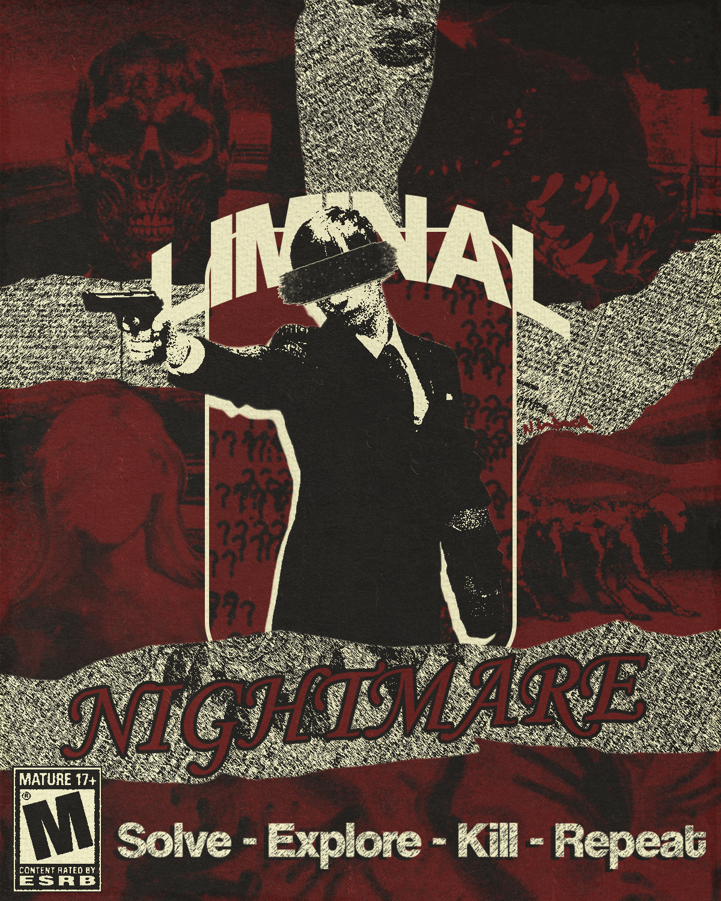
Un survival horror donde el monstruo sos vos.
Sobreviví con un solo brazo a un hospital psiquiátrico infinito que se reescribe mientras corrés. Los guardias son criaturas ciegas, los pacientes son monstruos, los médicos te cazan. Y el psicólogo te sigue sin descanso: nunca lo podés matar. Lo único que no se distorsiona sos vos… y eso es exactamente el problema.
Nunca estuviste huyendo de un monstruo.
El protagonista está internado en un hospital psiquiátrico tras un episodio violento que no recuerda del todo. Su percepción no es un narrador confiable.
- El episodio. Durante una alucinación, cree que pacientes y guardias quieren atraparlo y ataca a un guardia.
- El disparo. El guardia se defiende y le dispara en el brazo; muere. El brazo queda inutilizado.
- La fuga. Toma el arma del guardia y arranca su escape, convencido de que necesita huir.
- El espacio infinito. Recorre un lugar aparentemente infinito que cambia entre hospitales, apartamentos, centros comerciales, supermercados y estacionamientos de su pasado.
- Los indicios. Voces que lo llaman por su nombre. Puertas que se convierten en habitaciones del hospital. Rostros que por un instante recuperan su apariencia real.
- El final. El psicólogo lo alcanza. No lo mata: lo sujeta — y la realidad empieza a cambiar.
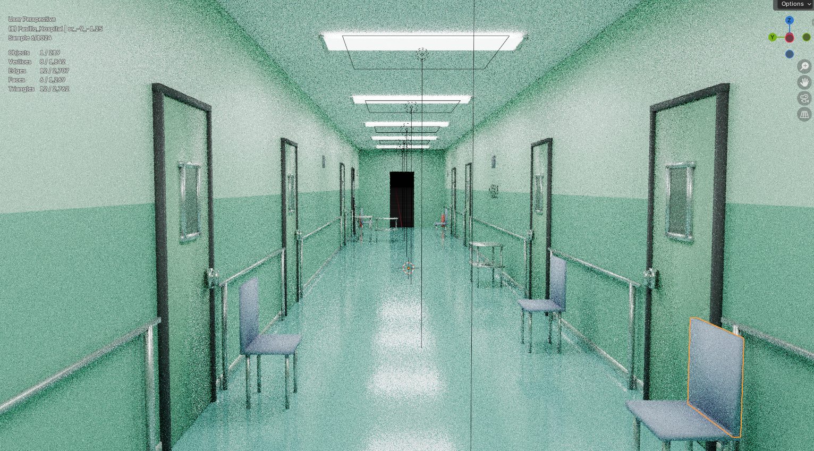
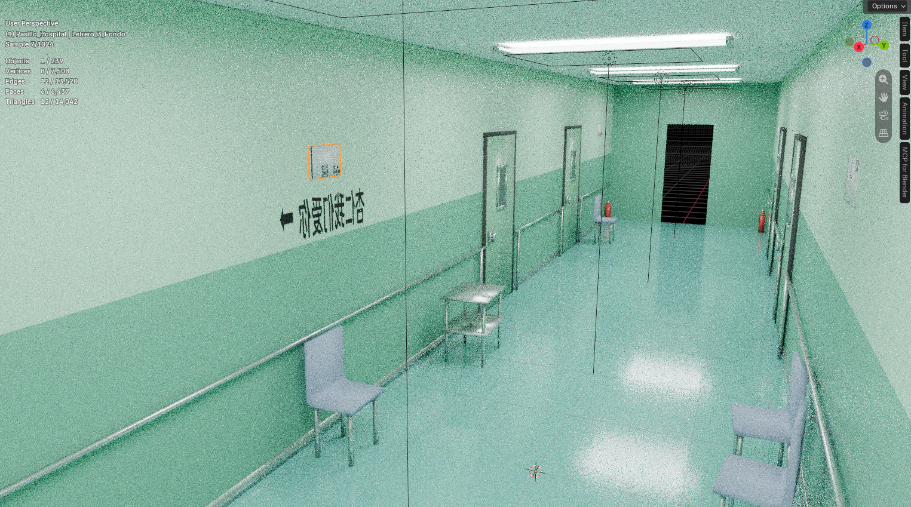
Los monstruos desaparecen. El laberinto se convierte en el hospital psiquiátrico. Los sonidos de persecución son voces de médicos y enfermeros. El psicólogo lo devuelve a la habitación de aislamiento… y él sigue convencido de que lo están persiguiendo.
No es un narrador confiable.
Lo que ves durante el juego es su percepción de la realidad, no lo que ocurre objetivamente. El jugador experimenta la psicosis desde adentro: los enemigos, los espacios y los finales son traducciones de su mente.
- Estado
- Internado tras un episodio violento de origen difuso.
- Condición física
- Un brazo inutilizado → inventario de 2 slots y una sola mano libre.
- Percepción
- Alucina en tiempo real: la gente se convierte en criaturas, los lugares se reescriben.
- Objetivo
- Escapar a cualquier costo de un lugar que no puede comprender.
- Conflicto real
- Está huyendo de su propia realidad, no de un monstruo.
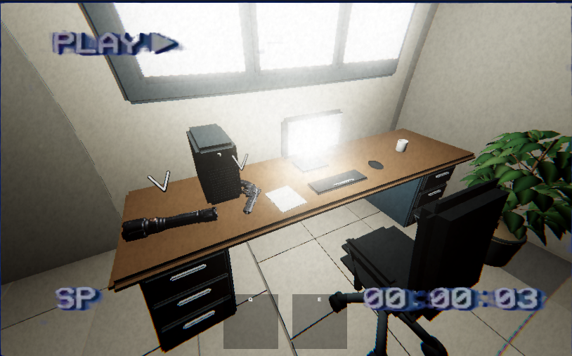
Todo lo que te persigue es gente.
Cada enemigo es una persona real reinterpretada por la mente del protagonista. El diseño evita el gore explícito: body horror sugerido y efecto uncanny para alimentar la incomodidad.
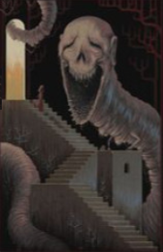
El Psicólogo
Figura que intenta contenerlo. Persigue lentamente durante todo el juego y nunca puede ser derrotado: no se mata, no se frena del todo. Simplemente siempre te encuentra.
Inmortal · inevitable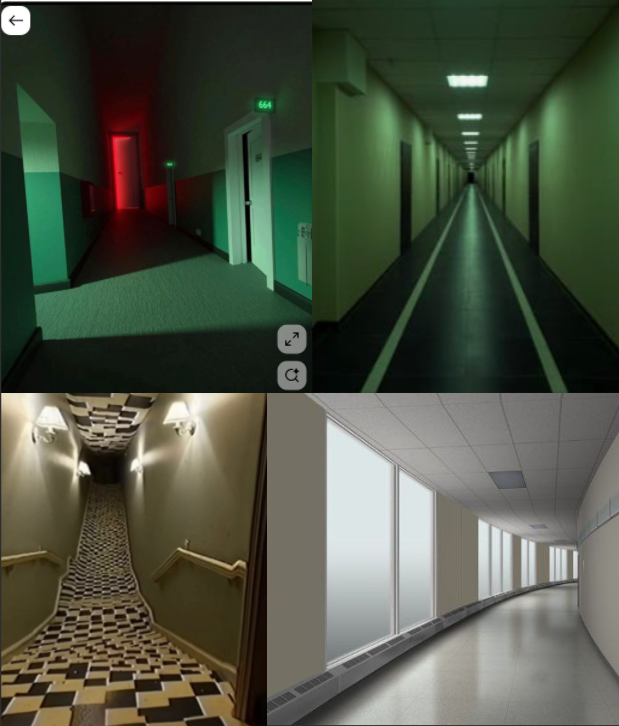
Guardias
Los guardias del hospital. No ven correctamente: patrullan y reaccionan al sonido. Cazan por el oído — y el micrófono real del jugador es ruido.
Percepción sonora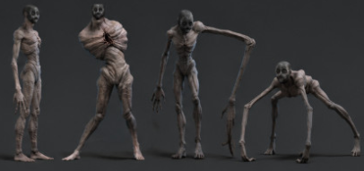
Pacientes
Otros internos, vistos como criaturas deformes y agresivas. El clásico perseguidor de visión: te ven, te persiguen, te alcanzan.
Visión · agresivos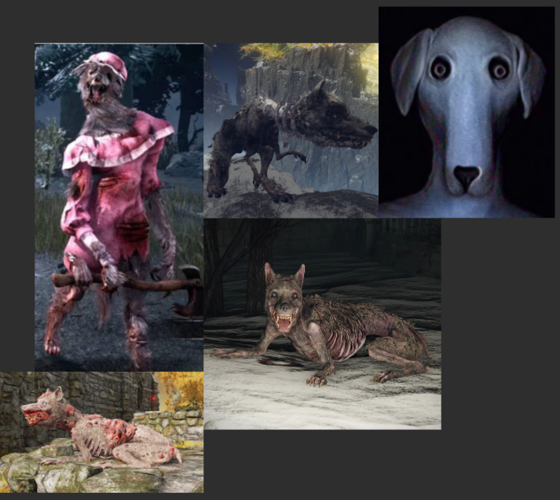
Médicos
El personal médico que intenta perseguir y contener al protagonista durante sus episodios. Rápidos, peligrosos, impacientes.
Velocidad · persecuciónPor qué importa
La idea es reforzar que el verdadero horror no sean solo las criaturas, sino la sensación de irrealidad. Los enemigos "normales" se pueden matar; el psicólogo no. Esa asimetría es el motor de tensión del juego: siempre hay una amenaza que no podés resolver con balas.
Un brazo. Dos slots. Cada decisión pesa.
La limitación como diseño
Solo hay dos slots (Q / E). Linterna, arma o ítem útil: tener dos cosas a la vez es un lujo. Cambiar de arma es una decisión, no un hábito. Los power-ups (cintas) permiten montar armas cuerpo a cuerpo sobre el muñón y otorgan mejoras permanentes.
Mundo procedural por "blits"
Módulos predefinidos que re combinan estética, habitaciones y dificultad de forma procedural. Cada partida recorre un laberinto distinto: nunca dos escapes iguales.
Ruido como sistema
Correr hace ruido, agacharse casi ninguno — y el micrófono real del jugador suma al ruido percibido. Hablar fuerte te delata. El sonido es una mecánica, no un adorno.
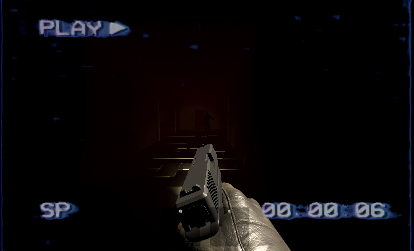
Mecánica de la patada — parry temporizado
La patada funciona como el parry de Souls: tenés que pegarla calculando el tiempo para que entre justo cuando el enemigo te golpea. No es un ataque, es una defensa ofensiva con castigo duro por fallar.
Leé el ataque
El enemigo entra en su windup. Esa es tu ventana: no podés spamear, tenés que timing.
Parry perfecto
La patada entra justo con el golpe: el enemigo se stunea y no te hace daño. Te abre la ventana para responder.
Fallaste el timing
Si fallás el parry, recibís daño y la patada no hace ninguno. El riesgo es simétrico: nada de spam seguro.
Los ítems permanentes modifican esta mecánica (stun más largo, patadas que dañan, menos ruido al patear) — ver sección 06.
Ítems permanentes: ropa que cambia cómo jugás.
Se encuentran en el mundo y se adaptan al cuerpo: ropa y accesorios. Cada categoría ocupa un solo hueco; si agarrás uno nuevo con otro equipado, se intercambian. Los anillos y collares son ilimitados.
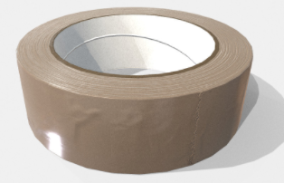
Ejemplos de build
| Ítem | Efecto |
|---|---|
| Zapatillas livianas | − ruido · − stun de patada |
| Botas pesadas | + ruido · las patadas ahora dañan, no solo stunean |
| Guantes de látex | + velocidad de recarga, sacar armas, etc. |
| Chaleco antibalas | + ruido · + protección |
| Venda en la boca | Elimina la mecánica de escuchar el micrófono |
| Anillo C | ×1.5 → ×3 de daño por cada nivel con la misma arma |
Zapatillas deportivas (+velocidad) · termica (visibilidad térmica) · casco (++protección) · collar (−daño, −visión de enemigos)… el catálogo crece con la cursada.
Regla de oro: todo ítem cumple al menos una condición
Un ítem que solo sube un número es aburrido. El sistema está pensado para modificar decisiones y crear sinergias, no para inflar estadísticas:
Found footage × espacios liminales.
Escenarios cotidianos vacíos —hospitales, supermercados, escuelas, estacionamientos— que resultan familiares pero profundamente inquietantes. Filtros de cámara analógica, distorsión, respiración y pasos lejanos. El objetivo es un impacto visual inmediato: «algo no encaja acá».
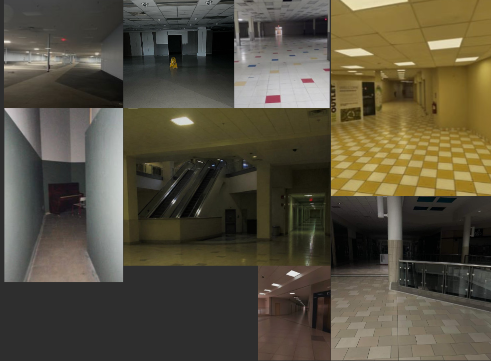
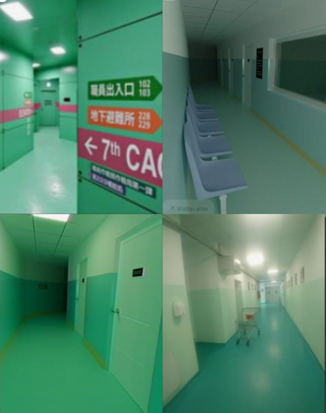

Por qué un plano
La arquitectura del laberinto se documenta como módulos reutilizables. Cada pasillo es una plantilla con puertas, señalética, puntos de luz y spawns. El procedural los recombina: misma gramática, distinta experiencia.
Esa repetición con variación es lo que produce la sensación de «ya estuve acá… pero no exactamente así» — el corazón del horror liminal.
Ya está construido en Unity.
- Motor
- Unity · URP · Input System · Render Pipeline propio VHS
- Enemigos
- 4 tipos con IA propia (Zombie / Runner / Blind / Nemesis) + Factory + Spawner procedurales
- Nemesis
- Inmortal por diseño:
TakeDamageyDieanulados; velocidad escala con cercanía y progreso - Ruido
- Evento central
OnNoiseMade+ lectura directa del micrófono real (RMS) → el BlindEnemy caza por oído - Inventario
- 2 slots fijos con HUD de preview 3D, agarrar / soltar / lanzar
- Armas
- Revólver con tambor y reserva, Glock, escopeta; VFX de disparo, recoil, mira, caída de balas al recargar
- Atmósfera
- Shaders VHS (grano, smear, chroma), filtro rojo de daño, bodycam shake, overlay de salud baja
- Mapa
- Generador procedural por blits: habitaciones, conexiones, loot, dificultad y perfilado de luz
Diagrama de arquitectura del proyecto (click para ampliar) —
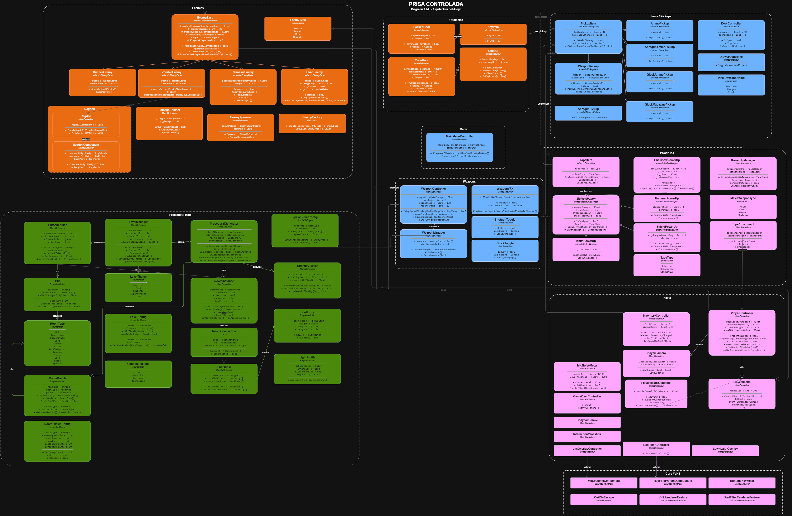
Prisa Controlada · UML del código real
¿Qué hace único a este proyecto?
Nadie murió en la historia de desarrollo… todavía.
en el sentido literal